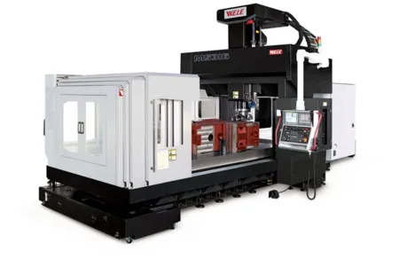
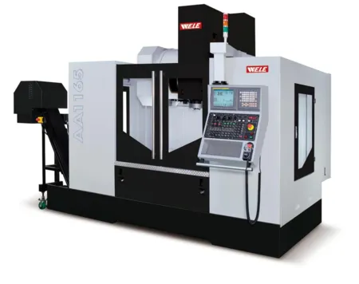
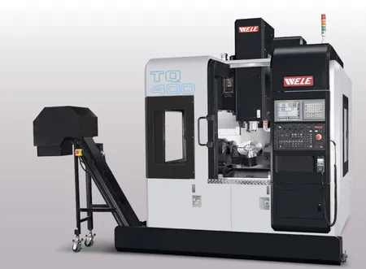

展商推荐 | 台湾崴立邀您参观5月郑州工博会
首页 / 展商推荐 | 台湾崴立邀您参观5月郑州工博会
优质展商推荐
台湾崴立机电股份有限公司
展位号：CT009-1
诚邀您参观
2024郑州工业装备博览会
5月7-10日|郑州国际会展中心

识别二维码，快速进行观众预登记
企业简介
台湾崴立机电股份有限公司是和日本TOYODA丰田工机投资及技术合作。创办人关永昌先生及专业经营团队沿自工业技术研究院机械工业研究所，为了让台湾工具机产业能够深耕茁壮，并推动「所有权与经营权独立」、「由专业经理人领导团队永续经营」的理念，决定创立工具机厂。
经过二十多年的努力经营之后，该工具机厂成为世界颇具知名度的大厂牌，曾荣获外贸协会颁发的优良产品设计奖与优良自创品牌奖、机器公会颁发的工具机创新产品奖、盘石奖等，除此之外行销通路更是遍及五大洲。产品销售到欧美，韩国，日本，印度，新加坡等国。
主要用户有航天产业，大飞机生产，军工制造，汽车制造，新能源（光伏，风电），半导体装备，产业机械（工作母机），工程机械等行业。
本公司实力雄厚，重信用、守合同，公司秉承“顾客至上，锐意进取”的经营理念，坚持“客户第一”的原则为广大客户提供优质的服务并赢得了广大客户的信任。
主要产品
龙门加工中心+龙门五面体加工中心
产品优势简介：

高刚性，高精度，高稳定性，与丰田工机技术合作提供高品质的数控机床及服务
AA/CA 系列立式加工中心
产品优势简介：

全硬轨设计，轴四轨，提供给钛合金及高温合金加工等难加工材质工件加工以良好的高性能机床；
四轴加工中心+五轴加工中心
产品优势简介：

高性价比的四/五轴加工中心，根据客户的需求不同有320/500/600/800mm等型号选择，另外对于大型部件有各种规格龙门五轴对应；
·END·